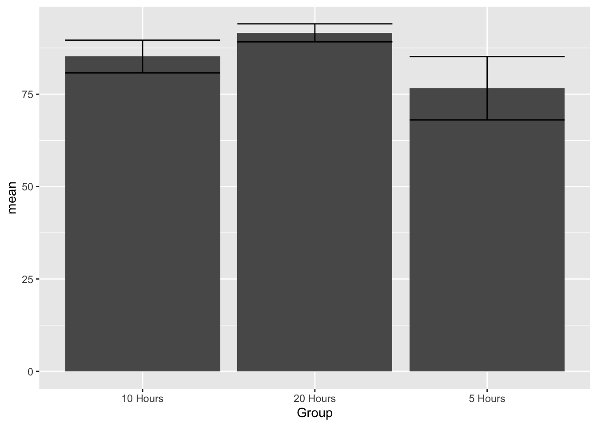
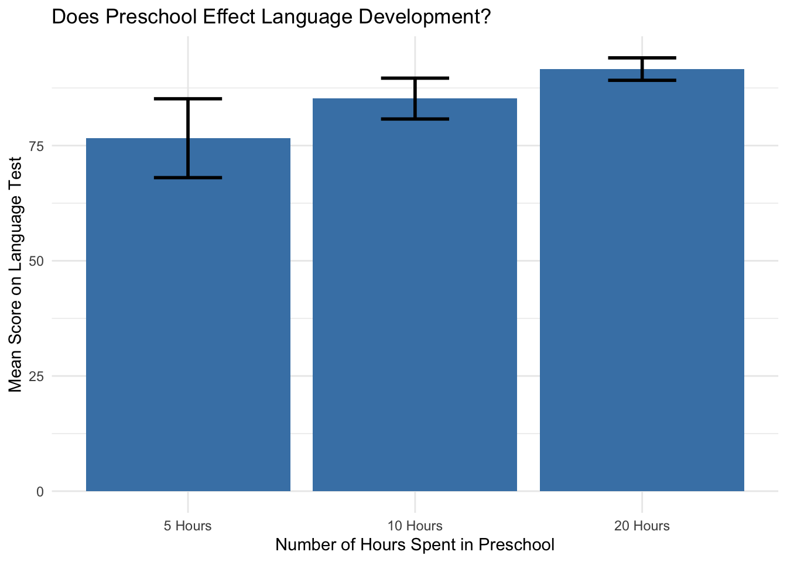

One-Way ANOVA
James Van Slyke
3/29/2021
## Registered S3 method overwritten by 'psych':
## method from
## plot.residuals rmutil##
## Attaching package: 'psych'## The following objects are masked from 'package:scales':
##
## alpha, rescale## The following objects are masked from 'package:ggplot2':
##
## %+%, alphaOne-Way ANOVA Example
Practice dataset: How does preschool affect language development?
Three groups that differ by how many hours they spent in preschool per week
Variables
IV = Preschool
DV = Language Development
Language development was measured based on a language development test score
Null Hypothesis: Attendance at preschool has no effect on language development
View Dataset
View(ch15ds1)View in R Console
ch15ds1## Group Language.Score
## 1 5 Hours 87
## 2 5 Hours 86
## 3 5 Hours 76
## 4 5 Hours 56
## 5 5 Hours 78
## 6 5 Hours 98
## 7 5 Hours 77
## 8 5 Hours 66
## 9 5 Hours 75
## 10 5 Hours 67
## 11 10 Hours 87
## 12 10 Hours 85
## 13 10 Hours 99
## 14 10 Hours 85
## 15 10 Hours 79
## 16 10 Hours 81
## 17 10 Hours 82
## 18 10 Hours 78
## 19 10 Hours 85
## 20 10 Hours 91
## 21 20 Hours 89
## 22 20 Hours 91
## 23 20 Hours 96
## 24 20 Hours 87
## 25 20 Hours 89
## 26 20 Hours 90
## 27 20 Hours 89
## 28 20 Hours 96
## 29 20 Hours 96
## 30 20 Hours 93Let’s look at a bar graph of the data first
Step 1 - create table of Descriptive Statistics
library(dplyr)
Preschool_Descriptives <- ch15ds1 %>%
group_by(Group) %>%
summarize(n = n(),
mean = mean(Language.Score),
sd = sd(Language.Score),
se = sd / sqrt(n),
ci = qt(0.975, df = n - 1) * sd / sqrt(n))Check it out
Preschool_Descriptives## # A tibble: 3 × 6
## Group n mean sd se ci
## <chr> <int> <dbl> <dbl> <dbl> <dbl>
## 1 10 Hours 10 85.2 6.20 1.96 4.43
## 2 20 Hours 10 91.6 3.41 1.08 2.44
## 3 5 Hours 10 76.6 12.0 3.78 8.56Now graph it based on the descriptive statistics
ggplot(Preschool_Descriptives,
aes(x = Group,
y = mean)) +
geom_bar(stat = "identity") +
geom_errorbar(aes(ymin=mean-ci,
ymax=mean+ci))
Run your ANOVA
First install Psych package
library(psych)Check out the variables.
Psych package uses a different command for this “describeBy”
Must specify DV and groups
describeBy(ch15ds1$Language.Score, group = ch15ds1$Group)##
## Descriptive statistics by group
## group: 10 Hours
## vars n mean sd median trimmed mad min max range skew kurtosis
## X1 1 10 85.2 6.2 85 84.38 5.19 78 99 21 0.89 -0.15
## se
## X1 1.96
## ---------------------------------------------------
## group: 20 Hours
## vars n mean sd median trimmed mad min max range skew
## X1 1 10 91.6 3.41 90.5 91.62 2.97 87 96 9 0.26
## kurtosis se
## X1 -1.72 1.08
## ---------------------------------------------------
## group: 5 Hours
## vars n mean sd median trimmed mad min max range skew
## X1 1 10 76.6 11.96 76.5 76.5 14.08 56 98 42 0.05
## kurtosis se
## X1 -0.9 3.78Run your ANOVA! Something new, must save results in an object rather than the results being there automatically
m1 <- aov(Language.Score~Group, data = ch15ds1)To get ANOVA table must use “summary” function
summary(m1)## Df Sum Sq Mean Sq F value Pr(>F)
## Group 2 1133 566.5 8.799 0.00114 **
## Residuals 27 1738 64.4
## ---
## Signif. codes: 0 '***' 0.001 '**' 0.01 '*' 0.05 '.' 0.1 ' ' 1Figure out the effect size - Eta squared The formula is SSbetween/SSTotal or SSbetween/SSbetween+SSResidual
1133/(1133+1738)## [1] 0.394636Write out conclusion
Number of hours in Preschool had a significant effect on language development, F(2, 27) = 8.799, p = 0.00114, 𝜂2 = 0.39.
Where is the difference? Need to use post hoc tests
TukeyHSD will tell us where the differences are between the individual groups.
Run TukeyHSD on saved ANOVA results
TukeyHSD(m1)## Tukey multiple comparisons of means
## 95% family-wise confidence level
##
## Fit: aov(formula = Language.Score ~ Group, data = ch15ds1)
##
## $Group
## diff lwr upr p adj
## 20 Hours-10 Hours 6.4 -2.497288 15.2972884 0.1941234
## 5 Hours-10 Hours -8.6 -17.497288 0.2972884 0.0596448
## 5 Hours-20 Hours -15.0 -23.897288 -6.1027116 0.0007780Finally, write out the whole conclusion.
TukeyHSD post hoc tests revealed that 20 hours a week of preschool (M=91.6, SE=1.96) resulted in significantly higher levels of language development in comparison to 5 hours (M=76.6, SE=3.78). This difference, -15 95% CI[-23.90, -6.10] was significant with an adjusted p = .0008.
Improve the graph
ggplot(Preschool_Descriptives,
aes(x = Group,
y = mean)) +
geom_bar(stat = "identity") +
geom_errorbar(aes(ymin=mean-ci,
ymax=mean+ci)) +
scale_x_discrete(limits=c("5 Hours", "10 Hours", "20 Hours"))
Make it look real nice Clark
ggplot(Preschool_Descriptives,
aes(x = Group,
y = mean)) +
theme_minimal() +
geom_bar(stat = "identity", fill="steelblue") +
geom_errorbar(aes(ymin=mean-ci,
ymax=mean+ci), width=.3, size=1) +
labs(title = "Does Preschool Effect Language Development?",
y="Mean Score on Language Test", x="Number of Hours Spent in Preschool") +
scale_x_discrete(limits=c("5 Hours", "10 Hours", "20 Hours"))